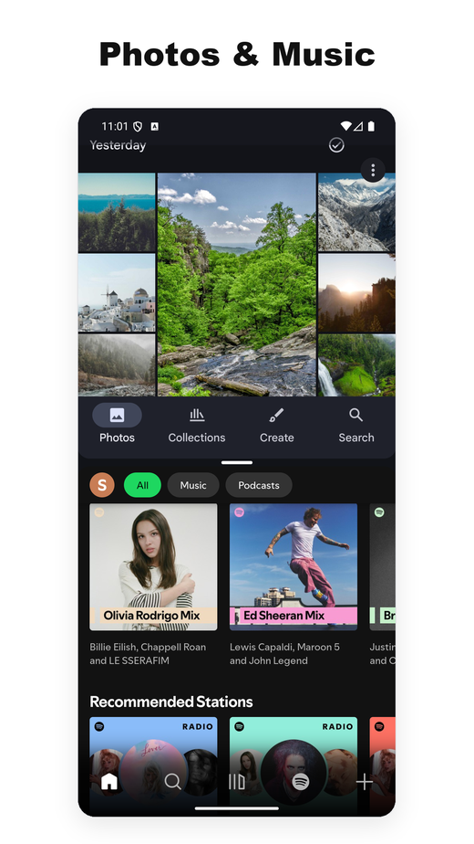
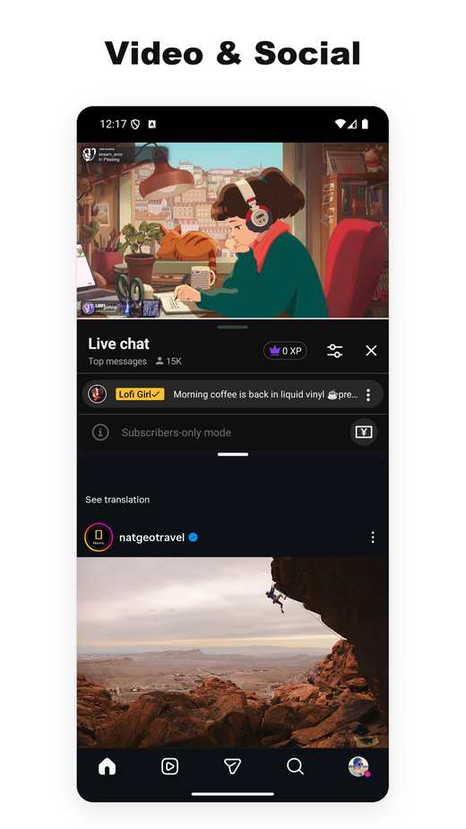
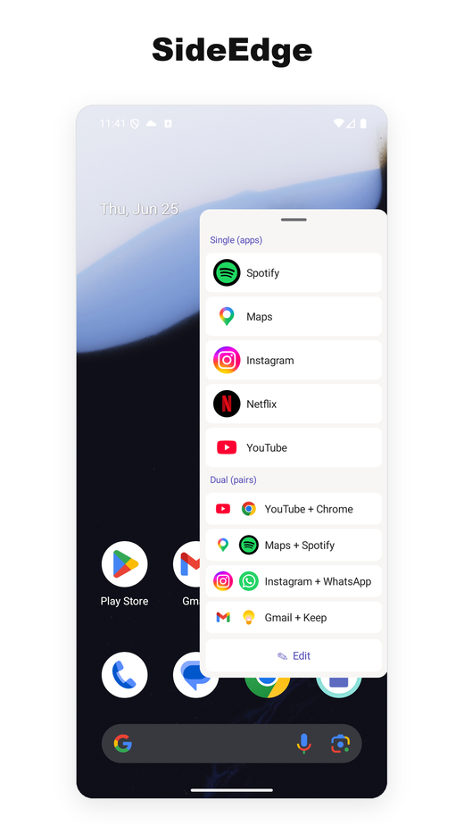
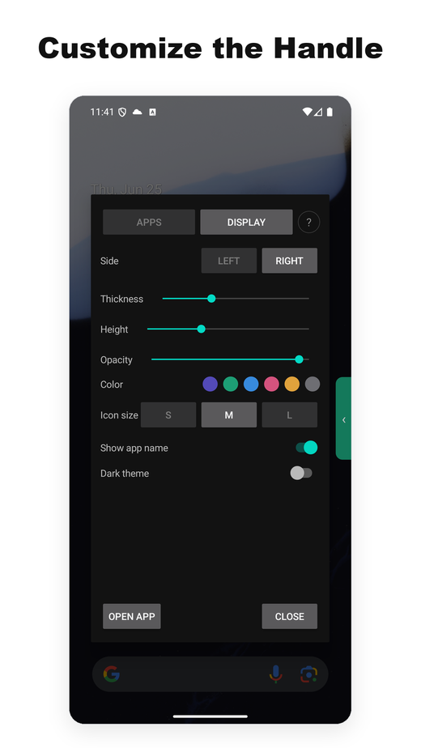

- One of the few Android split-screen utilities still working reliably on Android 15, 16, and 17.
- Most competitors broke when Google changed the underlying APIs; ours kept shipping updates across every recent OS transition.
- No ads, no internet access required. The split-screen core needs no Accessibility Service on Android 12L+; the optional SideEdge sidebar uses one only to hide its handle on login/password screens. Lightweight, with no background services.
- Free tier covers core usage. Pro subscription is around $1/month — roughly one tenth of the nearest paid competitor.
- Native App Pair on phones is essentially Samsung-only — Android 15 added it at the OS level, but only for large-screen devices, leaving Pixel phones (and every other non-Samsung phone) out.
- If you're on Pixel and miss Galaxy's App Pair, this is the closest drop-in replacement we've seen.
- Background: why "App Pair" matters on Android
- What Split Screen Launcher actually does
- SideEdge — launch your pairs from any screen
- A Samsung App Pair alternative for Pixel
- The Android 15/16 problem — and why most competitors broke
- Permissions and privacy
- How it compares to other split-screen apps
- Pricing
- Who this app is for (and who should skip it)
- Summary
1. Background: why "App Pair" matters on Android
Android has supported split-screen multitasking since version 7.0 (Nougat, 2016). What it has never supported at the OS level is saving combinations of two apps and launching them together. Samsung added this to One UI as "App Pair" back in 2017, and users who move from Galaxy to Pixel almost immediately notice it's gone.
The workaround is to install a third-party launcher that automates the two-step process: open app A, open app B into the adjacent window. Google Play lists dozens of these — but the ecosystem is messier than it looks, because each Android release changes how split-screen can be invoked, and most of these apps don't get updated.
Android 15 (2024) finally introduced a native App Pair feature at the OS level — but Google scoped it to large-screen devices only. Pixel Tablet got it; Pixel 9 Pro didn't. As of mid-2026, here's the lay of the land on phones:
- Samsung Galaxy phones — native App Pair since 2017 (via Edge Panel)
- Pixel phones (regular models, not Tablet or Fold) — none
- Xiaomi, OnePlus, Oppo, Realme, Vivo, Motorola, Nokia, Sony, ASUS — none
So on phones, native App Pair is effectively a Samsung-only feature. Everyone else either uses Android's manual split-screen (open app, long-press recents, drag, repeat) or installs a third-party launcher like this one.
A Samsung App Pair alternative for Pixel and stock Android
If you've moved from a Galaxy phone to a Pixel — or to any stock-Android phone — and you're looking for a Samsung App Pair alternative, this is the gap we built Split Screen Launcher to fill. You get the same one-tap "launch both apps side-by-side" behavior, without needing a Samsung device or the Edge Panel.
It's also one of the few options that is still a split-screen app that works on Android 15, 16, and 17 — with no ads, no tracking SDKs, and no Accessibility permission for the split-screen core on Android 12L and up (the optional SideEdge sidebar is the one exception). Most older app-pair tools lean on system shortcuts that recent Android releases closed off; this one reaches split view through a path we've kept working across each OS update.
2. What Split Screen Launcher actually does
Split Screen Launcher is a single-purpose utility. You pick two apps, name the pair ("Commute", "Work", "YouTube + Instagram"), and the pair shows up as a row in the app. Tapping it opens both apps side-by-side.


That's really the entire feature set. No built-in browser, no floating widgets, no notification panel integration. The app is lightweight — a few megabytes — and it doesn't run anything in the background.
Example pairs we used during testing:
- Google Maps + Spotify — driving
- YouTube + Instagram — second-screen viewing
- Chrome + Google Keep — research with notes
- Gmail + Slack — work triage
- Calculator + Chrome — comparing prices across tabs
One use case we didn't anticipate: the car. A user told us they run Split Screen Launcher on the Android AI box in their vehicle, pairing Maps + Spotify for navigation with music — and switching to Maps + Netflix for whoever's in the passenger seat. Because launching a pair is a single tap, it suits a car head-unit far better than long-pressing through the recents menu.
Trigger your pairs automatically — MacroDroid, Automate, Tasker
Another use case we didn't plan for came from a completely different corner: a motorcycle. A rider using the app on a handlebar-mounted tablet wanted their MacroDroid automation to bring up a saved pair on its own — an ignition-triggered macro that opens the split with no taps while riding. That request became a feature. As of version 3.0.4, MacroDroid can launch a saved pair through Android's standard shortcut picker, so a macro fires the split the same way it fires any other action. We haven't individually tested other automation tools like Tasker or Automate, but because this feature relies on that standard Android picker rather than anything app-specific, they should work the same way. It's a Pro feature, strictly limited to launching your pre-saved pairs. If you don't use automation tools this won't matter to you — but for the hands-free, on-the-road corner of our users, it closes the gap between "one tap" and "no taps."
Setting it up in MacroDroid
- In your macro, add an Action → Applications → Launch Shortcut.
- In the "Select Shortcut" list, pick Split Screen.
- Choose the specific saved pair you want to trigger.
- Attach it to whatever trigger you like — a Bluetooth device connecting, a charger plugging in, or a time of day.
That's it. Once your trigger fires, the app pair opens entirely on its own. For example, you can set it up so your tire-pressure monitor and dialer launch the moment your car's engine starts, or have your navigation and music apps pop up as soon as your phone connects to the car's Bluetooth.


Backup and export
One detail worth calling out because it's easy to miss: pair data exports to a backup file. That sounds trivial, but several competing apps in this category store their pairs in app-private storage with no export path — switching phones means rebuilding every pair by hand. We made the backup/restore a first-class feature precisely so a Pixel-to-Pixel migration restores the full set in seconds.
A clean home screen
And another design choice worth noting up front: by default, pairs live inside the app — no home-screen icons are created. The reason is partly to keep things simple (the home screen doesn't get cluttered with pair icons) and partly architectural — the app isn't tied to specific launchers (Pixel, Nova, etc.). As noted in section 3, shortcut-dependent launchers are exactly the kind that tend to break across Android 15 and 16 transitions; staying inside the app makes phone-to-phone migration smoother.
An optional pin-to-home action lets Pro users launch a pair with a single tap straight from the home screen. We wanted to keep the original "keep the home screen simple" posture intact while still answering the "I want to launch the split right from a home icon" need. The icon shown on home stacks the two app icons vertically, so the pair stays visually distinct from regular launcher icons.
SideEdge — launch your pairs from any screen
Version 3.0 adds SideEdge: a pull-out sidebar you swipe in from the edge of the screen. It lists your saved pairs and single apps, so you can fire a split — or jump straight to one app — from any screen, without first going back to the home screen.
If you came from a Galaxy phone, this is the part that will feel familiar. Samsung's Edge Panel is how a lot of people launched App Pairs on One UI — a tab on the side of the screen that slides out a tray of shortcuts. SideEdge is our take on that idea, brought to any Android phone or tablet. It isn't a complete replacement for Samsung's version, but it gets you a similar experience — and like the rest of the app, it's ad-free. If you've been looking for an Edge Panel alternative on Pixel or stock Android, this is one of the closest options we've found.


A floating handle sitting on top of a login or password screen would block you from typing into it. So SideEdge uses an Accessibility Service for one narrow job — to recognize those security screens and pull the handle out of the way so you can type, then bring it back when you're done. It never reads, collects, or transmits screen content. Full detail is in Permissions and privacy below.
Who this app is for (and who should skip it)
Before we dive into the technical side, here's a quick check so you can decide whether the rest of this article is worth your time.
Good fit if you…
- Use the same two apps together regularly (maps + music, email + chat)
- Are on Pixel or stock Android and miss Samsung's App Pair
- Prefer apps without ads or tracking SDKs
- Run Android 12L or newer (no Accessibility permission for the split-screen core; only SideEdge uses one)
- Want something that keeps working across OS version bumps
Skip this if you…
- Rarely use split-screen in the first place
- Want a floating widget, gesture launch, or advanced automation (beyond launching a saved pair)
- Own a Samsung device — One UI's built-in App Pair is already excellent
- Are on a heavily customized Android skin (MIUI/HyperOS, OxygenOS, ColorOS, MagicOS, EMUI/HarmonyOS) — those vendors modify the split-screen internals, so behavior on those is best-effort
Still interested? The rest of this article covers the technical background — why Android 15 and 16 broke most of the alternatives, and the design decisions behind our approach.
3. The Android 15/16 problem — and why most competitors broke
This is the interesting part, and the reason most competing apps have stopped working.
Historically, split-screen launchers have relied on a handful of OS-level APIs that Google has gradually tightened or removed. Each new Android release has chipped away at the methods third-party apps use to launch two apps side-by-side. Android 15 and 16 in particular closed off the most common routes. Shell-level workarounds fail in similar ways.
In plain terms: the "tricks" third-party apps used to flip the phone into split mode don't work anymore on Android 15 and 16. Most apps in this category never shipped a fix.
Split Screen Launcher reaches split view reliably on Android 15, 16, and the new Android 17 via a different path. We're keeping the exact mechanism to ourselves — it took a fair amount of experimentation to find a combination that works across OS versions, and publishing the recipe would effectively be handing it to every broken competitor. What we can say is that our release history reflects active maintenance across the Android 12, 12L, 14, 15, 16, and 17 transitions, and we intend to keep that cadence going.
android:resizeableActivity="false" in their manifest — the stock Camera and Google Files are the obvious examples — and instead of forming a pair, they just open on their own in full screen (Samsung's built-in App Pair behaves the same way).
(Workaround) Turning on both
Settings → System → Developer options → Force activities to be resizable and Allow non-resizable in multi-window makes those apps work in split-screen too. The in-app Help screen ("How to Use 'May not work' Apps") has the step-by-step.
(Update) Recent versions also handle several apps that used to resist pairing — Alexa and Google Calendar among them — so they now open correctly in split view.
4. Permissions and privacy
On Android 12L and newer, launching a pair requires no runtime permissions and no Accessibility Service — the core split-screen flow relies entirely on standard Android system behavior. Extra access is only ever requested for two optional features you choose to turn on yourself.
① Per-pair auto-rotate (optional permission) — if you turn this on for a specific pair, only then does the app request the "Modify system settings" permission through the standard system dialog. It's never asked for up front, and you won't see the prompt unless you use that feature.
② Enabling SideEdge (optional feature) — turning on the sidebar uses two permissions. The first is "Display over other apps", which lets the panel appear over your screen. The second is the Accessibility Service, used for one narrow, defensive purpose: it detects when a secure system screen is active — a login field, password manager, two-factor prompt, or banking app — and automatically tucks the handle and panel out of the way so they never sit over sensitive input. It never reads, collects, or transmits your screen content. Both permissions stay completely off unless you grant them explicitly through the Android system dialogs.
On Android 9 through 12, the app does need Accessibility Service permission, because that's the only available API. The Play Store listing is explicit that the service is only used to trigger split-screen mode. The permission list shown by Google Play is short enough that you can read the whole thing on one screen — no location, no contacts, no storage, and (notably) no network. That's already unusual for this corner of the Play Store.
In plain terms: on older Android versions there was no official API for triggering split screen, so Accessibility Service was the only workable route. It's a legacy constraint, not something the app uses to read your screen.
For comparison, most free split-screen apps on the Play Store bundle ad SDKs (AdMob, Unity, IronSource), which means they ship with the INTERNET permission and the tracker bundle that comes with it. We chose to monetize via a minimal subscription instead — partly to keep the permission footprint clean, partly because bundling ad SDKs into a utility this small would balloon its size.
5. How we compare to other split-screen apps
Before the comparison itself, it's worth sketching the landscape. "App Pair"-style functionality has been approached from a few angles:
- OEM-specific implementations — Samsung's App Pair (since One UI, 2017), plus variants on Xiaomi, OPPO, and the old LG. These only work on that manufacturer's devices.
- Third-party utilities — standalone apps dedicated to this single use case. Most are built on OS-level APIs that have been narrowed or removed in recent Android versions, which is why the landscape has thinned out considerably.
- Automation-based approaches — Tasker and similar tools can script a split-launch, but they rely on the same underlying primitives as dedicated apps, so they inherit the same breakage. They also require users to build each pair manually. As of version 3.0.4 we've added a straightforward way to hook into these tools: you can launch a saved pair from MacroDroid (Pro) without scripting the split yourself. Because it uses Android's standard shortcut picker, it should also work with other automation apps like Tasker or Automate, though we haven't tested those end-to-end.
The third-party landscape itself is fragmented. Google Play surfaces dozens of dedicated split-screen utilities, but activity and quality are unevenly distributed.
The most-downloaded apps in this niche have racked up millions of installs, yet the field's leaders are surprisingly weak: the biggest of them combines that large reach with a mediocre review score, and another widely-installed alternative was last updated in mid-2025 and still hasn't shipped a fix for the Android 15 / 16 split-screen API changes. Several others price aggressively, with steep weekly subscriptions that have drawn criticism in user communities.
The common patterns across this field: most apps either stopped updating around Android 11–12, ship with intrusive banner or interstitial ads, or require the Accessibility Service permission across all Android versions (the split-screen core here drops that requirement on Android 12L+; only the optional SideEdge sidebar uses it). That makes the field unusually thin in terms of well-maintained, low-permission options.
A small, actively maintained, ad-free app like this one has an easy path to standing out — but only if users can find it.
6. Pricing
The free tier caps the number of saved pairs so users can try the full workflow before deciding whether it fits their habits. Core functionality — creating pairs, launching them, backup/restore — all works without paying.
The Pro subscription runs around $1 / month depending on region, removes the pair limit, and adds folder organization plus icon color customization. Standard Google Play subscription, cancel anytime.
For context: other paid split-screen utilities in the same category have premium tiers ranging from a one-time fee of a few dollars up to steep weekly subscriptions. At $1/month this is roughly an order of magnitude cheaper than the closest paid competitor.
7. Summary — who this is for
Who is this for? Honest take
We don't think this app is for everyone. If you don't already have a fixed two-app habit (maps + music, email + chat, etc.), you probably won't open it much. But if you're on stock Android and you've been missing Galaxy's App Pair since switching to Pixel, we built this for you — and we tried to make it the least-compromised way to get that behavior back. The no-ads posture and the $1/month price point are deliberate choices, and we think they're the right ones for this category.
Pros
- Actually works on Android 15, 16, and 17
- No ads on any tier
- Lightweight, no background services
- No Accessibility permission for the split-screen core on Android 12L+ (only optional SideEdge uses one)
- No network permission
- Pro tier at ~$1/month is 10× cheaper than competitors
- Backup / restore for device migrations
- Optional per-pair screen rotation (e.g. force a video pair to landscape)
- 15 language localizations
Cons
- There's a visible ~1 second delay between tap and split view appearing. This is mostly an OS-side cost — entering split mode on Android 12L+ involves multiple task transitions that the system sequences internally, so any app in this category sits in the 0.8–1.2 s range. Not a bug, but worth setting expectations
- No floating widget, no gesture binding. Automation-app launch (MacroDroid) is supported but Pro-only and limited to firing a saved pair. Home-screen shortcuts are also optional (Pro), but everything else stays inside the app
- Pair creation list shows every installed app without categories, which gets tedious once you pass ~60 apps on the device
- Solo dev, so if you hit an edge case on a non-Pixel ROM, don't expect same-day fixes